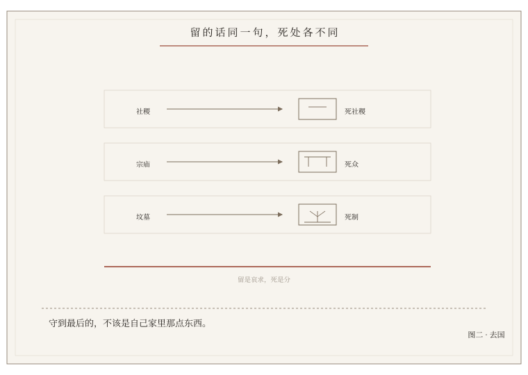

曲礼下 · 二·三十七 · 第 160 课
国君要离开本国，臣民拦住他，说：怎么可以丢下社稷走呢！大夫走，说：怎么可以丢下宗庙走呢！士走，说：怎么可以丢下坟墓走呢！然而国君死于社稷，大夫死于君之师众，士死于君之教令。
说什么事：去国之辞与死守之分，合为一节。拦住他的是同一句话，死在何处的回答各有其位。
落在哪一层：礼，兼及礼意。一节之内，一留一死。
为何编在此位：上节论私行出入之仪，此节论去国之大事。小出入与大去留，相接而见轻重。
【经】國君去其國，止之曰：「奈何去社稷也！」大夫，曰：「奈何去宗廟也！」士，曰：「奈何去墳墓也！」國君死社稷，大夫死眾，士死制。
【注】皆民臣殷勤之言。死其所受於天子也，謂見侵伐也。《春秋傳》曰：「國滅，君死之，正也。」死其所受於君。眾謂君師。制謂君教令所使為之。
【疏】此一节论国君以下去国，臣民止留之辞，及死其所守之事。「国君去其国」者，谓诸侯去国，而其臣民止留殷勤之辞也。奈何，犹言如何也。国主社稷，君去，故云「去社稷」。《异义》：《公羊》说「国灭，君死，正也」，故《礼运》云「君死社稷」，无去国之义；《左传》说昔大王居豳，狄人攻之，乃逾梁山，邑于岐，故知有去国之义。许慎谨案：《易》曰「系遁，有疾厉，畜臣妾，吉」，知诸侯无去国之义也。郑不驳之，明从许君用《公羊》义也。然则《公羊》之说正礼，《左氏》之说权法，义皆通也。「大夫，曰，奈何去宗庙也」者，大夫去国，谓三谏不从，或以罪见黜者，亦臣民止留之辞也。大夫无社稷，故云「宗庙」也。故《孝经》云，诸侯保其社稷，大夫守其宗庙也。「士，曰，奈何去坟墓也」，士亦谓三谏不从，及或以罪见黜，虽无臣民，而属吏止之也。士亦有庙，辟大夫，言「坟墓」，亦与大夫互也。然《孝经》云士「保其禄位而守其祭祀」，今不云「祭祀」者，明虽去此之彼，而犹得祭祀，但坟墓不随耳。「国君」至「死制」：国君体国，国以社稷为主，若有寇难，则以死卫之，故不可去也。注云「死其所受于天子也，谓见侵伐也」，郑又引《公羊》襄六年传云「国灭，君死之，正也」，以证之。「大夫死众」者，大夫职主领众将军，若四郊多垒，则为己辱，故有寇难，当保国，必率众御之，以死为度。「士死制」者，制谓君教命所使也。虽不得率师，若君命使之，则唯致死。熊氏云：「上云国君去社稷，此云死社稷；上云大夫去宗庙、士去坟墓，此不云大夫死宗庙、士死坟墓，而云死众、死制者，以宗庙、坟墓已私有之，大夫士为臣事君，不可为私事而死，秪得死君之师众及君政令。然君言死社稷，则宗庙、坟墓亦死可知也。」
去其国 离开本国。非出奔，是去。
止之 拦住他。注「皆民臣殷勤之言」。
社稷 国之所主。君去则去社稷。
宗庙／坟墓 大夫所守、士所属。位愈下，所系愈近。
死社稷 死于其所受于天子之地。注「谓见侵伐也」。
死众 众谓君师。率众御寇而死。
死制 制谓君教令。奉命而致死。
国君要离开本国，臣民拦他说：「怎么可以丢下社稷呢！」大夫要走，说：「怎么可以丢下宗庙呢！」士要走，说：「怎么可以丢下坟墓呢！」国君死于社稷，大夫死于君之师众，士死于君之教令。
此节一半是留，一半是死。留的话同一句式，所举之物各不相同：社稷、宗庙、坟墓。死的话也不说「为宗庙死」「为坟墓死」，而说「死众」「死制」——因为宗庙坟墓已属私有，为私事而死，不是臣的分。
第一层 所守随位而降 国以社稷为主，大夫守宗庙，士守坟墓。同是一去，所丢下的东西一级比一级近身。礼以所守之物定其位。
第二层 奈何二字 奈何，犹如何。这不是命令，是哀求。注「皆民臣殷勤之言」——留住一个人，最后的手段是问他一问。
第三层 去国之义的两说 疏列《公羊》「国灭君死，正也」与《左传》太王去豳两说，许慎从《公羊》，郑不驳。疏断之曰「《公羊》之说正礼，《左氏》之说权法，义皆通」。礼有正有權，二者并存而不相废。
第四层 死众死制 熊氏说得最清：宗庙坟墓已私有，臣不可为私事而死，只可死于君之师众与君之政令。此一层把「忠」与「私」的分界划得极明。
与今日何干 一个人守住什么，就看他的位置。守到最后一刻的，不该是自己家里的那点东西。
| 左 | 右 |
|---|---|
| 奈何去社稷 | 国君所守 |
| 奈何去宗庙 | 大夫所守 |
| 奈何去坟墓 | 士所守 |
| 民臣殷勤之言 | 不是命令，是哀求 |
| 国君死社稷 | 死于所受于天子 |
| 大夫死众 | 众谓君师 |
| 士死制 | 制谓君教令 |
| 宗庙坟墓已私有 | 不可为私事而死 |
画三级台阶，自上而下三格，每格右侧画一件器物：上格一枚方形的社稷之象征（方框内一道横线），中格一座带双柱的庙形轮廓，下格一道隆起的土垄与一棵小树。每格左侧画一道向内的短箭（示意臣民拦留），箭尾各连一枚小圆。三格之下另画一条横贯的粗横线，线上方一段竖线贯穿三格到底（示意死于所守）。不写文字、不画人。赭色只用在最下方的粗横线上。
